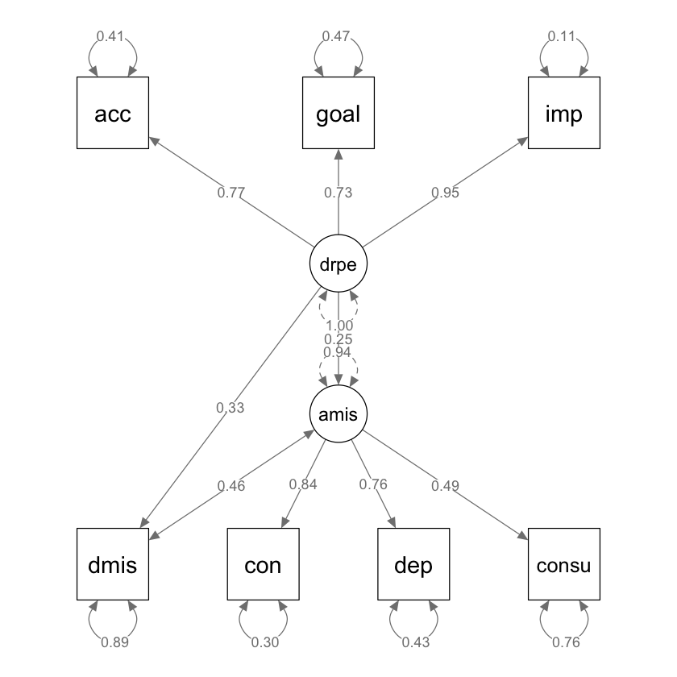
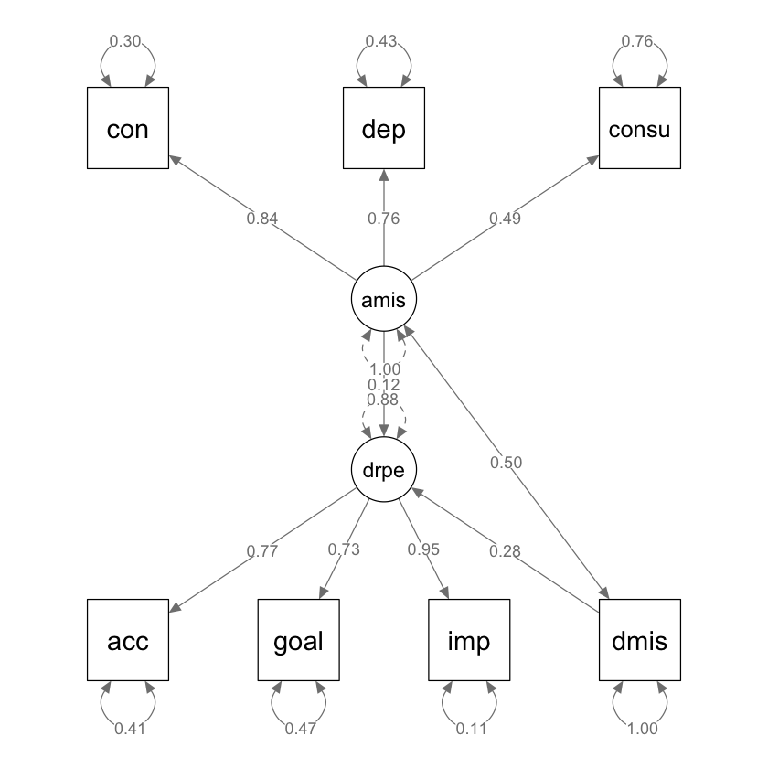

source("../_common.R")
suppressPackageStartupMessages({
library("lavaan")
library("lavaanExtra")
library("lavaanPlot")
library("psych")
library("dplyr")
library("tidyr")
library("knitr")
library("mvnormalTest")
library("semPlot")
library("DiagrammeRsvg")
library("rsvg")
library("effectsize")
})
set.seed(42)58 ✏️ Esercizi
Nello studio di {cite:t}weiss2018difficulties viene esaminata la relazione tra la difficiltà di regolare le emozioni positive e l’abuso di alcol e di sostanze. Gli autori propongono due modelli SEM. Si riproduca l’analisi svolta da {cite:t}weiss2018difficulties usando lavaan.
Nello studio di {cite:t}weiss2018difficulties
- La difficoltà di regolare le emozioni positive viene misurata con la Difficulties in Emotion Regulation Scale – Positive (DERS-P; Weiss, Gratz, & Lavender, 2015), che comprende le sottoscale di Acceptance, Impulse, e Goals.
- L’abuso di sostanze viene misurato con la Drug Abuse Screening Test (DAST; Skinner, 1982).
- L’abuso di alcol viene misurato con la Alcohol Use Disorder Identification Test (AUDIT; Saunders, Aasland, Babor, De la Fuente, & Grant, 1993), con le sottoscale di Hazardous Consumption, Dependence, e Consequences.
I dati di un campione di 284 partecipanti sono riportati nella forma di una matrice di correlazione.
lower <- "
1
.38 1
.41 .64 1
.34 .44 .30 1
.29 .12 .27 .06 1
.29 .22 .20 .17 .54 1
.30 .15 .23 .09 .73 .69 1
"dat_cov <- lavaan::getCov(
lower,
names = c("dmis", "con", "dep", "consu", "acc", "goal", "imp")
)
print(dat_cov) dmis con dep consu acc goal imp
dmis 1.00 0.38 0.41 0.34 0.29 0.29 0.30
con 0.38 1.00 0.64 0.44 0.12 0.22 0.15
dep 0.41 0.64 1.00 0.30 0.27 0.20 0.23
consu 0.34 0.44 0.30 1.00 0.06 0.17 0.09
acc 0.29 0.12 0.27 0.06 1.00 0.54 0.73
goal 0.29 0.22 0.20 0.17 0.54 1.00 0.69
imp 0.30 0.15 0.23 0.09 0.73 0.69 1.00In questo studio, gli autori adottano due modelli SEM distinti per analizzare i dati. Nel primo modello, si postula che la difficoltà nella regolazione delle emozioni positive funzioni come variabile esogena, influenzando sia l’abuso di sostanze sia l’abuso di alcol. Inoltre, si ipotizza una correlazione tra abuso di sostanze e abuso di alcol, suggerendo una possibile interdipendenza tra questi due comportamenti problematici.
Per quanto riguarda le variabili latenti specifiche, la difficoltà di regolare le emozioni positive, indicata come drpe, è rappresentata da una variabile latente che si basa su tre indicatori.Parallelamente, l’abuso di alcol, etichettato come amis, è concepito come una seconda variabile latente, anch’essa identificata tramite tre indicatori distinti.
mod <- "
drpe =~ NA*acc + goal + imp
amis =~ NA*con + dep + consu
amis ~ drpe
dmis ~ drpe
dmis ~~ amis
drpe ~~ 1*drpe
amis ~~ 1*amis
"Adattiamo il modello ai dati con sem().
fit <- lavaan::sem(mod, sample.cov = dat_cov, sample.nobs = 284)Esaminiamo i risultati.
standardizedSolution(fit) |> print() lhs op rhs est.std se z pvalue ci.lower ci.upper
1 drpe =~ acc 0.770 0.031 24.982 0.000 0.710 0.830
2 drpe =~ goal 0.728 0.033 21.849 0.000 0.663 0.794
3 drpe =~ imp 0.945 0.024 39.322 0.000 0.898 0.992
4 amis =~ con 0.837 0.039 21.217 0.000 0.759 0.914
5 amis =~ dep 0.756 0.041 18.420 0.000 0.676 0.837
6 amis =~ consu 0.494 0.052 9.439 0.000 0.392 0.597
7 amis ~ drpe 0.254 0.066 3.863 0.000 0.125 0.383
8 dmis ~ drpe 0.334 0.056 6.001 0.000 0.225 0.443
9 amis ~~ dmis 0.458 0.055 8.303 0.000 0.350 0.567
10 drpe ~~ drpe 1.000 0.000 NA NA 1.000 1.000
11 amis ~~ amis 0.936 0.033 28.023 0.000 0.870 1.001
12 acc ~~ acc 0.407 0.047 8.575 0.000 0.314 0.500
13 goal ~~ goal 0.470 0.049 9.677 0.000 0.375 0.565
14 imp ~~ imp 0.107 0.045 2.349 0.019 0.018 0.196
15 con ~~ con 0.300 0.066 4.551 0.000 0.171 0.430
16 dep ~~ dep 0.428 0.062 6.900 0.000 0.307 0.550
17 consu ~~ consu 0.756 0.052 14.595 0.000 0.654 0.857
18 dmis ~~ dmis 0.889 0.037 23.960 0.000 0.816 0.961Creiamo un path diagram.
semPaths(fit,
whatLabels = "std",
sizeMan = 10,
edge.label.cex = 0.9,
style = "ram",
nCharNodes = 0, nCharEdges = 0
)
Gli autori esplorano un modello alternativo nel quale le relazioni causali vengono rovesciate: in questo caso è la difficoltà di regolazione delle emozioni positive ad essere la variabile esogena, e l’abuso di sostanze e l’abuso di alcol sono le variabili esogene.
mod_alt <- "
drpe =~ NA*acc + goal + imp
amis =~ NA*con + dep + consu
drpe ~ amis + dmis
dmis ~~ amis
drpe ~~ 1*drpe
amis ~~ 1*amis
"fit_alt <- sem(mod_alt, sample.cov = dat_cov, sample.nobs = 311)standardizedSolution(fit_alt) |> print() lhs op rhs est.std se z pvalue ci.lower ci.upper
1 drpe =~ acc 0.770 0.029 26.143 0.000 0.712 0.828
2 drpe =~ goal 0.728 0.032 22.864 0.000 0.666 0.791
3 drpe =~ imp 0.945 0.023 41.149 0.000 0.900 0.990
4 amis =~ con 0.837 0.038 22.203 0.000 0.763 0.910
5 amis =~ dep 0.756 0.039 19.276 0.000 0.679 0.833
6 amis =~ consu 0.494 0.050 9.877 0.000 0.396 0.592
7 drpe ~ amis 0.115 0.075 1.549 0.121 -0.031 0.261
8 drpe ~ dmis 0.276 0.066 4.189 0.000 0.147 0.405
9 amis ~~ dmis 0.503 0.050 10.122 0.000 0.405 0.600
10 drpe ~~ drpe 0.879 0.037 23.633 0.000 0.806 0.952
11 amis ~~ amis 1.000 0.000 NA NA 1.000 1.000
12 acc ~~ acc 0.407 0.045 8.973 0.000 0.318 0.496
13 goal ~~ goal 0.470 0.046 10.126 0.000 0.379 0.561
14 imp ~~ imp 0.107 0.043 2.458 0.014 0.022 0.192
15 con ~~ con 0.300 0.063 4.763 0.000 0.177 0.424
16 dep ~~ dep 0.428 0.059 7.221 0.000 0.312 0.545
17 consu ~~ consu 0.756 0.049 15.273 0.000 0.659 0.853
18 dmis ~~ dmis 1.000 0.000 NA NA 1.000 1.000semPaths(fit_alt,
whatLabels = "std",
sizeMan = 10,
edge.label.cex = 0.9,
style = "ram",
nCharNodes = 0, nCharEdges = 0
)
Vedremo in seguito come sia possibile eseguire un test statistico per stabilire quale di due modelli sia più appropriato. Anticipando qui tale discussione, applichiamo il test del rapporto di verosimiglianze.
lavTestLRT(fit, fit_alt) |> print()Warning message in lavTestLRT(fit, fit_alt):
"lavaan WARNING: some models have the same degrees of freedom"
Chi-Squared Difference Test
Df AIC BIC Chisq Chisq diff RMSEA Df diff Pr(>Chisq)
fit 12 4963.6 5022.0 38.211
fit_alt 12 5433.1 5492.9 41.844 3.6327 0 0 I risultati di questo test suggeriscono che il primo modello è maggiormente appropriato per descrivere i dati raccolti da {cite:t}weiss2018difficulties.